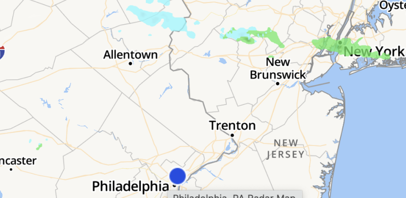

Philadelphia
≡
≡
≡
≡
🌎
⚙️
favorite locations:
wissahickon valley park:
open, high wind advisory in upper park region
valley forge nat’l hist. park:
open, conditions normal
current:
wind:
10 mph/25 mph gusts
precipitation:
high 60% @ 2PM
air quality index:
15 ppm
fire risk:
low
